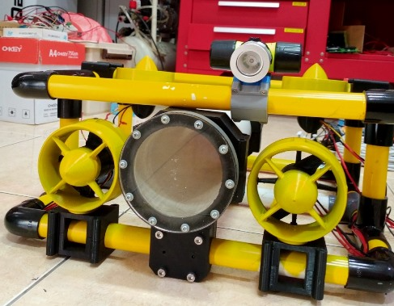

Drabala: Engineering an Underwater Drone from Scratch
From CAD Design to a Fully Functional ROV 🌊

Exploring the ocean isn’t just about curiosity—it’s about overcoming harsh conditions like pressure, limited visibility, and difficult access. That’s where Drabala, an unmanned underwater drone, comes in.
Designed for underwater exploration, Drabala is equipped with a camera system capable of identifying coral reefs and marine life while transmitting real-time footage to a control computer. Operated remotely and capable of running for up to 2 hours, it’s built as a practical tool for observation and research.
🔧 Turning Design into a Functional ROV
Unlike many projects that stop at simulation, Drabala required full physical realization—from CAD design to a working underwater system. Every mechanical decision directly impacts durability, waterproofing, and performance.
🛠️ My Role as Mechanic
I was responsible for the entire mechanical lifecycle of the drone, ensuring that each component could be designed, manufactured, and assembled into a reliable underwater system.
📐 1. 3D Design for Manufacturing
Using CAD tools such as SolidWorks, I developed detailed models that served as the foundation for production. The design focused on real-world manufacturability, not just visual appearance.
- Precise fitting between frame, enclosure, and mounts
- Structural strength for underwater conditions
- Optimized space for electronics and camera integration
🏭 2. Manufacturing (CNC & 3D Printing)
After finalizing the design, I fabricated components using a combination of CNC machining and 3D printing to balance performance and flexibility.
- CNC machining → high precision and structural strength
- 3D printing → complex geometries and lightweight parts
This hybrid approach allowed optimization between strength, weight, cost, and manufacturability.
🔩 3. Full System Assembly
I assembled all mechanical components into a complete system, ensuring proper fit and functionality under real operating conditions.
- Waterproofing (sealing and enclosure integrity)
- Mechanical alignment (camera positioning and balance)
- Structural rigidity (handling movement and pressure)
Assembly is where theory meets reality—small misalignments or poor sealing can lead to complete system failure underwater.
🚀 Why This Project Stands Out
- ✅ Full-cycle engineering: design → manufacturing → assembly
- ✅ Real-world constraints: waterproofing, pressure, durability
- ✅ Integration of mechanical structure with electronics
- ✅ Practical application in marine exploration
🌟 Final Thoughts
Drabala is more than just an underwater drone—it represents how mechanical engineering transforms ideas into functional systems. From CAD modeling to CNC machining and final assembly, every stage contributes to reliability and performance.
This project reinforces a critical principle: a system is only as good as its build quality—especially when operating in demanding environments like underwater.